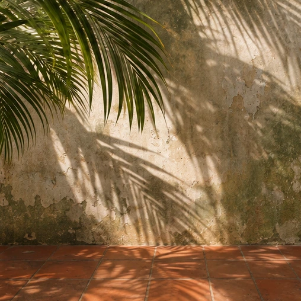

Walking diary / A self-guided idea
A slow afternoon.
A suggested rhythm for an independent visit: notice the setting, read the kiln and finish with a single object. Move at your own pace.
A suggested walk / 01–03
Stop when something catches your eye.
-
Stop 01
Notice the setting
Begin in a visitor area. What do you notice first about the light, shade and transition from the street?
-
Stop 02
Read the slope
From an accessible viewing position, follow the kiln uphill with your eyes. Look for the change from its lower to upper end.
-
Stop 03
Choose a vessel
Finish with a single pot. Compare its form with the space around it. Was the shape the first thing you noticed?
Before leaving
Check the practical details.
This suggested itinerary has no fixed schedule. The operator welcomes self-guided visitors; ask ahead about access needs and which areas are open.